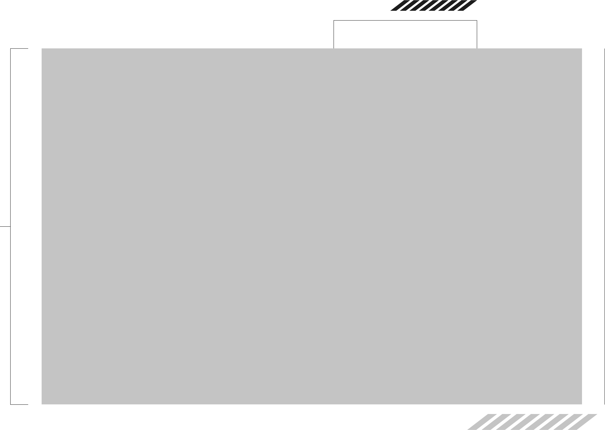

2-E
慎様のブランチ
映画コーナー
～ナイスグリーンを添えて～
製作期間3週間の超大作
2年E組の担任である細川慎先生は、溢れる高貴さゆえに、生徒たちから「慎様」と呼ばれています。
今回は、そんな慎様イチオシの2-Eオリジナル映画3本の予告編を紹介します。
予告編の製作・脚本・出演・監督はすべて2年E組一同です。
呪業
「黄色い熊の都市伝説、知ってる？」
同級生4人組の川中、細野、斉藤、鈴木はある夜、怖いもの見たさで行った心霊スポット「轟渓谷」で、黄色い熊の人形に触れてしまう。夜の学校で人形の「呪い」は本性を現し彼らに襲いかかる。
2-Eホラー班制作の仮想ホラー映画「呪業」予告編。かつてない恐怖体験を、今ここに。
約束のシナリオ
演劇が大好きな少女・みくとその親友・有紗はいつも一緒にいた。
─みくがいなくなる日までは。
みくが遺した一冊の台本から、止まっていた彼女の青春が動き出す。
SCHOOL ALONe
フランスからの修学旅行生が取り残された！？でも待てよ、ここって渋谷じゃん？
初めての渋谷に浮かれたケヴィンがナンパをしたのはヤンキーの彼女だった！
キレたヤンキーから逃げ込んだのは近くの学校。ケヴィンは反撃の準備を整える...
Making
撮影前の打ち合わせ、メイク、NGシーン、撮影後の片付け、などなど。
本編とは違う、撮影中のゆるい雰囲気が感じられる三分間。
（本編未使用シーンが含まれます)
〈約束のシナリオ〉
【お借りした音源・楽曲】
歳月-雲流れ- Foxtail-Grass Studio様 https://f-g-s.net/
Brilliant World DUGGY MUSIC様 https://soundcloud.com/f7kfincmxujw/brilliant-world
贖罪(off vocal) 傘村トータ様 https://youtu.be/uoL_7cX0pCQ https://piapro.jp/t/62jj
〈school alone〉 【お借りした音源・楽曲】
音人 https://on-jin.com 段ボール箱02 DOVA-SYNDROME https://dova-s.jp/ コミカル・ロック Jailbreak The Magic of Halloween 心臓の鼓動音（残響付き) Killing Party 効果音ラボ https://soundeffect-lab.info お金がじゃらじゃら ドーン 爆発2 ツルっとすべる サブマシンガン発射1 くらげ工匠 http://www.kurage-kosho.info ページめくる音02 OtoLogic https://otologic.jp 打撃09 無料効果音で遊ぼう！ https://taira-komori.jpn.org ただの車道1 クラクション3 壁を叩く(壁ドン?) コイン(財宝)じゃらじゃら
※これらの動画は渋谷教育学園渋谷高等学校2-E組の生徒によるものであり、お借りした音源・楽曲を使用した創作物となります。公式や公認のコンテンツではありません。
歳月-雲流れ- Foxtail-Grass Studio様 https://f-g-s.net/
Brilliant World DUGGY MUSIC様 https://soundcloud.com/f7kfincmxujw/brilliant-world
贖罪(off vocal) 傘村トータ様 https://youtu.be/uoL_7cX0pCQ https://piapro.jp/t/62jj
〈school alone〉 【お借りした音源・楽曲】
音人 https://on-jin.com 段ボール箱02 DOVA-SYNDROME https://dova-s.jp/ コミカル・ロック Jailbreak The Magic of Halloween 心臓の鼓動音（残響付き) Killing Party 効果音ラボ https://soundeffect-lab.info お金がじゃらじゃら ドーン 爆発2 ツルっとすべる サブマシンガン発射1 くらげ工匠 http://www.kurage-kosho.info ページめくる音02 OtoLogic https://otologic.jp 打撃09 無料効果音で遊ぼう！ https://taira-komori.jpn.org ただの車道1 クラクション3 壁を叩く(壁ドン?) コイン(財宝)じゃらじゃら
※これらの動画は渋谷教育学園渋谷高等学校2-E組の生徒によるものであり、お借りした音源・楽曲を使用した創作物となります。公式や公認のコンテンツではありません。